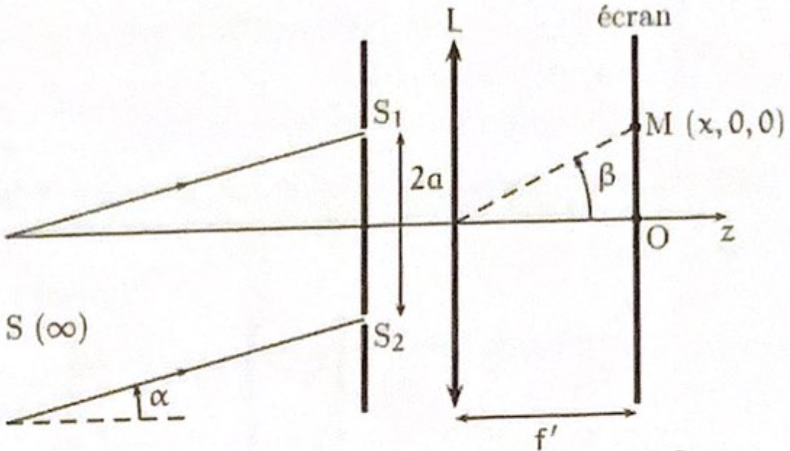

PrepOral
[MP] [Maison] [1]
Mesure de l'écart angulaire entre deux étoiles
Enoncé
On considère le dispositif représenté ci-contre. Un cache percé de deux trous \( S_1 \) et \( S_2 \) de même diamètre est éclairé par la lumière d’une étoile assimilée à une source ponctuelle monochromatique (\( \lambda_0 \)) située à l'infini et vue sous un angle \( \alpha \) par rapport à l’axe optique. Les deux trous sont séparés d'une distance \( 2a \). On dispose après le cache une lentille de focale \( f' \) dans le plan focal de laquelle on place un écran. On s'intéresse à l’éclairement en un point \( M(x, 0, z = 0) \) de l’écran.

1. Faire un schéma du dispositif en traçant soigneusement les rayons qui, issus de \( S \), interfèrent en \( M \).
2. Calculer la différence de marche \( \delta(M) \).
3. En déduire l'éclairement \( \mathcal{E}(x) \) sur l’écran. Que valent le contraste \( \Gamma \) et
l’interfrange \( I \) ?
Le dispositif est à présent éclairé par deux étoiles \( A \) et \( B \) assimilées à deux sources ponctuelles
monochromatiques (\( \lambda_0 \)) vues sous les angles \( \alpha_A \) et \( \alpha_B \).
On supposera les étoiles de luminosités identiques.
4. Déterminer l’éclairement en un point \( M \) de l’écran. Déterminer le contraste \( \Gamma(\alpha) \) de la
figure d’interférence. En déduire une méthode permettant de mesurer l’écart angulaire
\( \delta \alpha = | \alpha_B - \alpha_A | \) entre les deux étoiles.
Commentaires
Encore jamais posé !